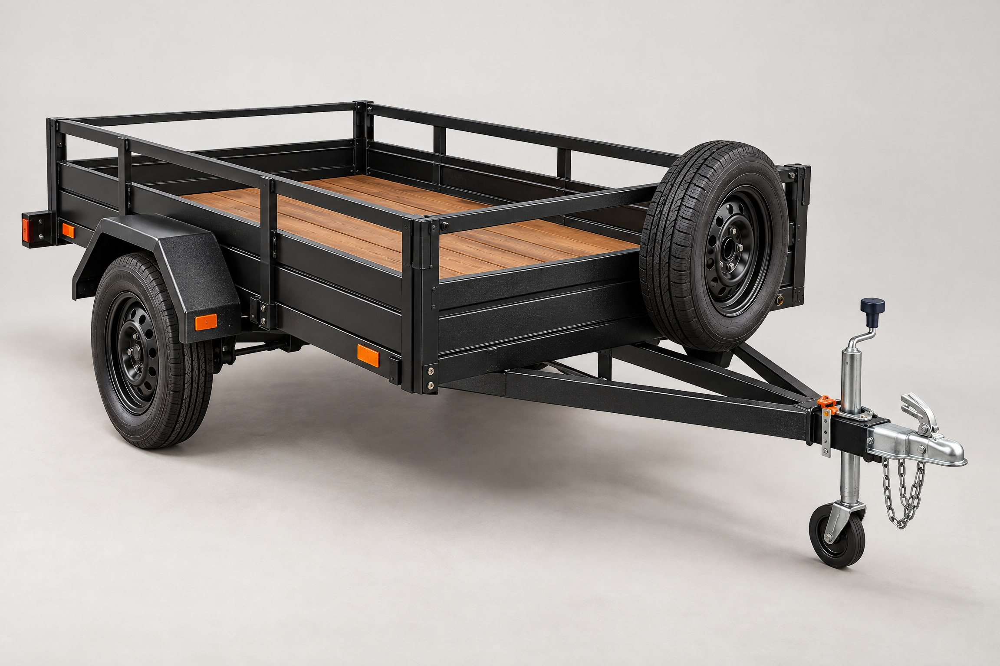
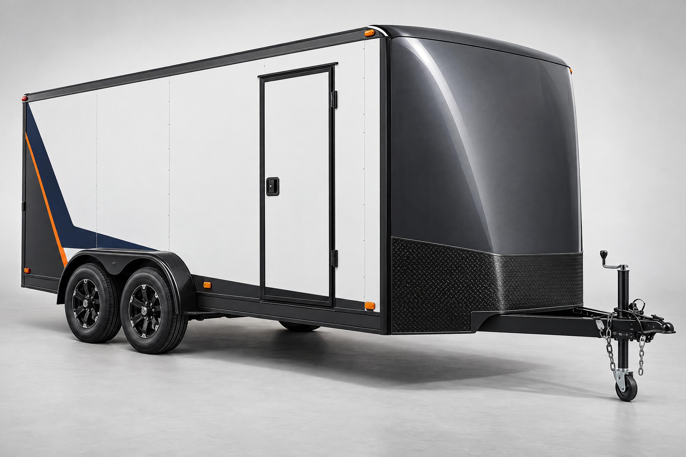
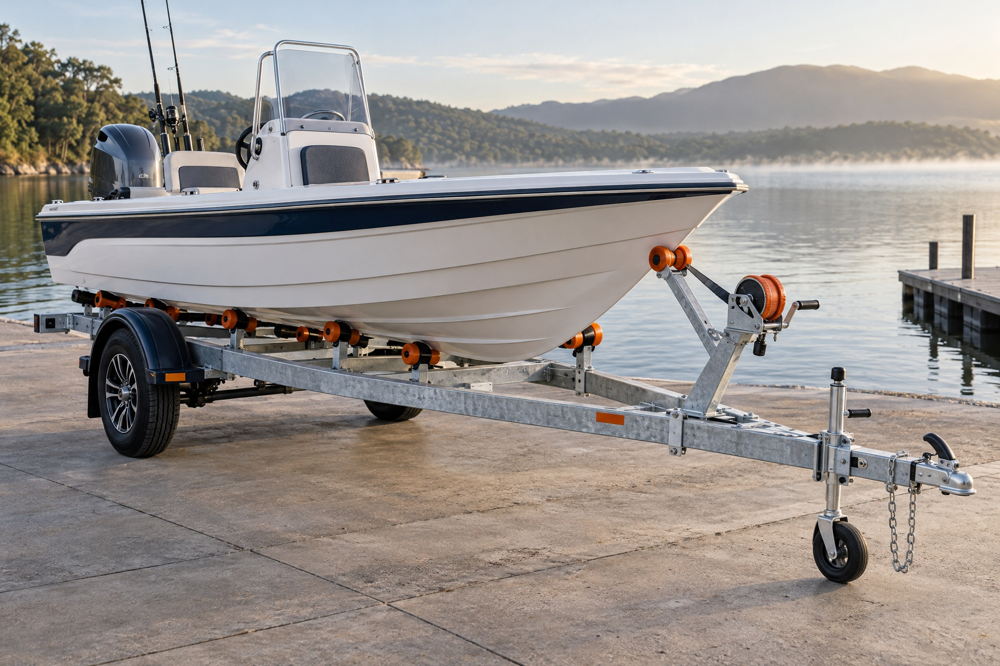
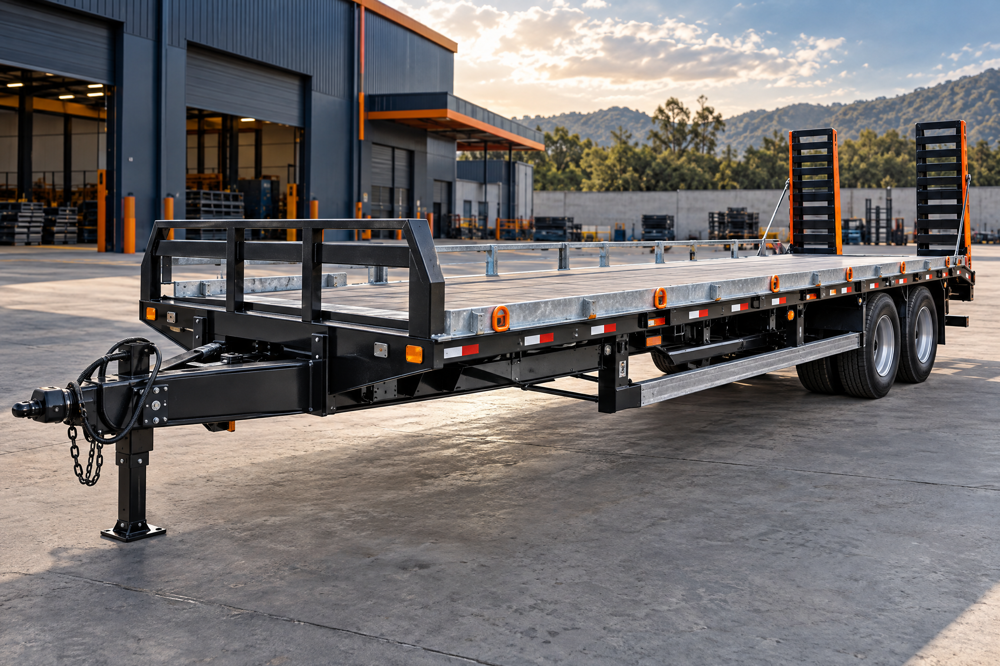

Utilitário
Versátil para cargas e trabalho diário.
Fabricamos reboques e engates em Joinville para acompanhar o seu trabalho, sua carga e o seu próximo destino — com produção própria e qualidade certificada.

Desde 1991, a Reboques Amaral trabalha para oferecer soluções seguras e funcionais para transporte. Fabricamos reboques e engates, fazemos locação e também cuidamos de consertos e manutenção em geral.
Converse com um especialista →Reboques para carga, transporte e lazer — incluindo carretas sob medida para todos os tipos de barco.

Versátil para cargas e trabalho diário.

Proteção para a sua carga.

Carretas sob medida para barcos.

Robustez para cargas maiores.
Do primeiro corte ao último acabamento, nossa experiência se transforma em reboques confiáveis, com garantia de qualidade e certificação INMETRO.
Reboques, engates e carretas sob medida para diferentes necessidades.
Opções de reboques para quando você precisa, pelo tempo que precisar.
Reparos e ajustes para devolver segurança e funcionalidade ao seu equipamento.
Manutenção em geral para manter seu reboque sempre pronto para a estrada.